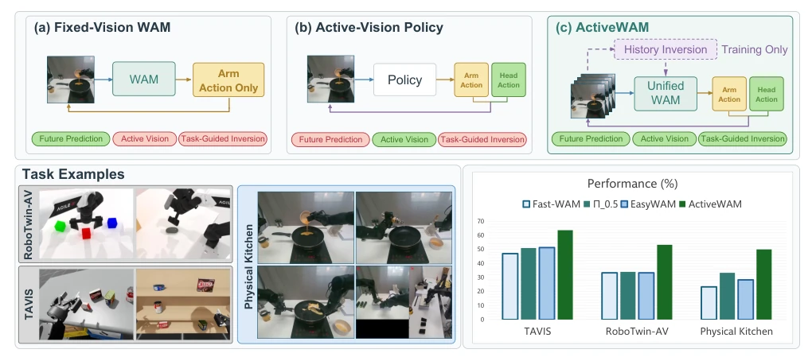
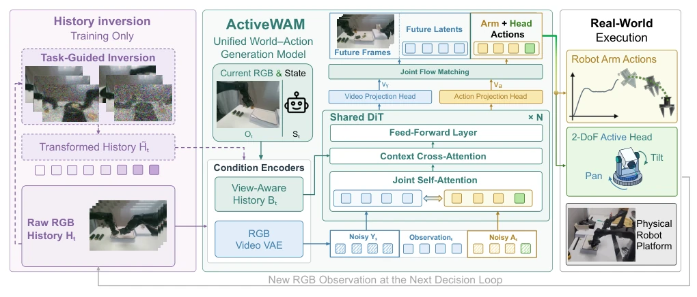
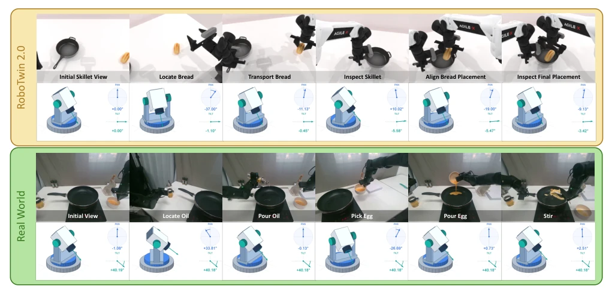

这篇论文给 WAM 加了个‘主动眼’，试图解决‘看’与‘做’的冲突。核心套路是用训练时的视频反演来模拟视角变化，测试时直接上原始数据，省去了昂贵的在线推理。这招确实聪明，但把希望寄托在冻结的 Wan 模型上，万一先验知识过时，策略会不会变傻？物理实验虽然看着热闹，但任务切换是预设的，不是端到端学的。总的来说，是个不错的工程补丁，但离真正的‘通用具身智能’还有距离，别被 20pp 的提升冲昏了头。
This paper equips WAM with an 'active eye', attempting to resolve the conflict between 'seeing' and 'doing'. The core approach employs training-time video inversion to simulate viewpoint changes, applying raw data directly at test time, thereby avoiding expensive online inference. This strategy is indeed clever, but pinning hopes on a frozen Wan model, if prior knowledge becomes obsolete, will the policy degrade? Although physical experiments appear elaborate, task switching is preset, not learned end-to-end. Overall, it is a decent engineering patch, but still distant from true 'general embodied intelligence'; do not be blinded by the 20pp improvement.
General manipulation requires robots to acquire visual evidence and execute actions simultaneously. Existing VLA policies [1] connect observations and instructions, whereas WAMs [3] must learn visual consequences. In bimanual manipulation, camera actions determine spatial relations visible within a limited history window. Existing benchmarks such as TAVIS [7] and AV-ALOHA [6] indicate that active control relies on task structure rather than general heuristics. Changing the viewpoint may acquire new evidence, but may also lose key clues. Although Stem-OB [13] employs diffusion inversion to enhance generalization, it does not constrain the retention of historical evidence. Existing methods like See2Act [9] couple action refinement with test-time viewpoint search, resulting in high computational overhead. Therefore, it is necessary to address how to retain task-critical evidence while controlling the acquisition of new evidence within a limited history window.

Fig. 1: (a) Fixed-vision WAM generates arm actions from static camera observations. (b) Active-vision policy controls head separately from manipulation. (c) ActiveWAM unifies head and arm generation in a common world-action model, using training-time history inversion to preserve task-relevant evidence while learning executable pan/tilt control. Task examples: simulation (RoboTwin-AV) shows object placement requiring spatial reframing; physical kitchen setup demonstrates composed multi-stage manipulation. Bar charts: ActiveWAM improves TAVIS success by 17.0pp on Head/GR1T2, RoboTwin-AV compound success by 20.0pp over Fast-WAM, and physical success by 26.7pp over Fast-WAM.
ActiveWAM adopts a unified world-action model to jointly generate pan-tilt and robotic arm actions. The core is training-time history inversion (TTI). First, utilizing a frozen Wan T2V video prior [26] to independently process each camera history, guiding transformations via task-related language token attention weights to ensure key visual evidence retention, and constraining dynamic consistency through feature matching. The transformed history is paired with the original history, sharing identical future videos and action targets for joint training. Second, a view-aware history adapter is introduced, encoding metadata such as camera identity, pose, and exposure time into visual tokens, helping the policy distinguish camera motion from scene changes. Finally, the action generation branch outputs robotic arm and pan-tilt actions simultaneously, with future video prediction serving only as an auxiliary training signal, decoding actions directly at deployment. This design avoids inversion or candidate ranking at test time, achieving end-to-end joint control.

Fig. 2: ActiveWAM overview. Active vision manipulation is treated as evidence-aware retain–acquire control. Training-time source- constrained inversion transforms observed histories, while shared WAM passes receive raw or transformed conditions with identical original future/action targets. View-aware history and current RGB condition encoders supply recent evidence and its camera context; the action branch determines executable arm and head control, with future-video prediction used as a co-training signal. Deployment retains raw inputs, one action-generation pass, and actual new measurements after a short executed prefix. It uses neither inversion nor candidate ranking, and requires no manually annotated optimal viewpoints or information-gain objective.
Baselines such as Fast-WAM, EasyWAM, and π0.5 were compared on the TAVIS and RoboTwin-AV benchmarks. RoboTwin-AV extends 50 tasks and supports executable pan-tilt control. Results show that ActiveWAM improved by 20.0pp over Fast-WAM under composite distribution shift, and 17.0pp on TAVIS. Ablation studies indicate that history inversion and active head control are complementary; removing either part significantly reduces performance. In physical kitchen tasks, ActiveWAM completed combination tasks such as chopping vegetables and frying eggs, achieving a success rate of 66.7% (Stage 1). Failure analysis shows the main causes stem from operation errors and field-of-view limitations. Fixed camera tests also demonstrate that the training method yields gains for static viewpoints.

Fig. 3: Representative head-view sequences with pan/tilt configurations: placing bread in a pan in RoboTwin-AV (top); pouring oil and egg mixture, then stirring on the real robot (bottom). ActiveWAM learns to expose task-critical spatial relations (bread-to-skillet alignment, egg-to-pan trajectory) through head motion while retaining previously acquired evidence within its history window.